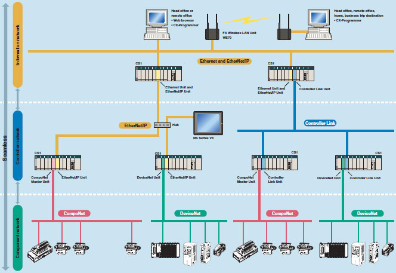

Windows is a registered trademark of Microsoft Corporation in the United States and other countries.
Microsoft product screen shots reprinted with permission from Microsoft Corporarion.
Other company names and product names in this document are the trademarks or registered trademarks of their respective companies.
Building Automation
Industrial Automation
Power Automation & Safety


Bangladesh Distributor
CS1G, CS1H
CS1G, CS1H Overview
From Machine Control to Information Management Multiple-application Controllers with a Wide Range of Functions
about this Product Family
Related Contents
- Automation Systems
- Programmable Controllers
- Features
- Lineup
- Specifications
- Dimensions
- Catalog
last update: November 05, 2013
High Performance
Ultimate Controller Performance
In order to create facilities that have the production capability to withstand sudden changes in demand, or to create machinery that is easily distinguished from that created by market competitors, a top-speed controller that can deliver the performance required to support these needs is required. The CS1 PLCs have been equipped with the highest I/O responsiveness and data control functionality to significantly reduce processing time and to control machinery movement with greater precision.
Human Efficiency
User-friendly Development Environment
In order to allow easier development of complex programs, bin addition to an integrated Windows-based development environment, the new PLCs are equipped with a variety of instructions. Structured programming functionality has been improved to allow programs to be reused with greater efficiency and thereby reduce labor requirements and cut costs.
Heritage
Efficient Use of Valuable Assets
The know-how that our customers have accumulated through the years forms the core of their competitive strength. At OMRON, we believe in enhancing this knowhow to the utmost. The key to doing this is 100% upward compatibility. CS1 PLCs allow existing Units and programs to be used without any changes.
Use the improved CS1 PLCs to scale advanced systems to the optimum size.
Wide Lineup Makes It Easy to Build the Optimum System
A total of nine CPU Unit models provide for a wide range of applications, from small-scale systems to large. The lineup also includes Memory Cards, Serial Communications Boards, and a wide selection of Special I/O Units that can be used with any CPU Units to flexibly build the system that meets the requirements.
Two Series of Expansion Racks Up to 50 m Long for Long-distance Expansion with Up to 72 Units and 7 Racks

With an expansion capacity of up to 80 Units and 7 Racks over a distance of 12 meters, the CS1 can meet large-scale control needs. Alternatively, an I/O Control Unit and I/O Interface Units can be used to connect two series of CS1 Longdistance Expansion Racks extending up to 50 m each and containing a total of up to 72 Units and 7 Racks. CS1 Basic I/O Units, CS1 Special I/O Units, and CS1 CPU Bus Units can be mounted anywhere on the Racks and programmed without being concerned about special remote programming requirements.
Note:C200H Units cannot be mounted on the Longdistance Expansion Racks.
Control Up to 960 Points with Units Mounted to the CPU Rack

The CS1 provides a high level of space efficiency. As many as 960 I/O points can be controlled by simply mounting ten Basic I/O Units, with 96 I/O points each, to the CPU Rack. Alternatively, as many as 80 analog I/O points can be used by mounting five Analog Input Units and five Analog Output Units.
Improved Refresh Performance for Data Links, Remote I/O Communications, and Protocol Macros

In the past, I/O refresh processing with the CPU Bus Unit only occurred during I/O refresh after instructions were executed. With the new CS1, however, I/O can be refreshed immediately by using the DLNK instruction. Immediate refreshing for processes peculiar to the CPU Bus Unit, such as for data links and DeviceNet remote I/O communications, and for allocated CIO Area/DM Area words when instructions are executed, means greater refresh responsiveness for CPU Bus Units.
Large Capacity CPU Units for Greater Component Control Power
The CS1 CPU Units boast amazing capacity with up to 5,120 I/O points, 250 Ksteps of programming, 448 Kwords of data memory (including expanded data memory) and 4,096 timers/counters each. With a large programming capacity, CS1 PLCs are not only ideal for large-scale systems but easily handle value-added applications and other advanced data processing.
System Bus Baud Rate Doubled
The data transfer rate between the CPU Unit and certain Units has been doubled to further improve total system performance.
Reduced Variation in Cycle Time During Data Processing
Instructions that require long execution time, such as table data processing instructions and text string processing instructions, are processed over multiple cycles to minimize variations in cycle time and maintain stable I/O response.
Faster Instruction Execution and Faster Overall Performance
In addition to further improvements to the instruction execution engine, which is the core of overall PLC performance, the high-speed RISC chip has been upgraded to realize the fastest instruction execution performance in the industry. Also, the new models have a mode where instruction execution and peripheral processing are processed in parallel, enabling balanced improvements in overall speed.
Common Processing: 0.3 ms
PCMIX Value: 16
Cycle Time (Cycle time for 128 inputs and 128 outputs):
Basic instructions only: 38 Ksteps/ms
Including special instructions: 22 Ksteps/ms
LD Instruction Processing Speed: 20 ns
OUT Instruction Processing Speed: 20 ns
Subroutine Processing Speed: 2.1 μs
Further improvements to Communications functions. Seamless networks increase production site transparency.
High-speed, High-capacity Data Links between PLCs via EtherNet/IP
EtherNet/IP is supported. EtherNet/IP is a global-standard network that uses cutting-edge general Ethernet technology for control and information network integration. This enables data links between PLCs, data links between a PLC and multi-vendor devices, and communications between PLCs and PTs over a general Ethernet network.
CompoNet Greatly Advances Wiring Reductions, Greater Information Handling, and Standardization
CompoNet is a multi-vendor network for bit-level control of approximately 1,000 points in 1.0 ms. It supports message communications at the sensor and actuator levels. Maintenance information can be controlled in each Slave for preventative maintenance of equipment.
Flexible System Building Based on the DeviceNet
The CS1 Series supports the worldwide multivendor bus standard, DeviceNet. Component connections in a multivendor environment are greatly enhanced by connecting to up to 64 nodes for a wide range of FA applications, and by device profiles and configurator tools that ensure high reliability and easy maintenance. Production systems can be configured even more flexibly by incorporating products such as the MULTIPLE I/O TERMINAL.
Functions for Better Ethernet Support
Ethernet is becoming increasingly important standard for information networks. Up to eight socket interfaces for TCP/IP and UDP/IP are supported, in addition to FINS messages, FTP file transfers, and mail notification, so that production management can now be organically linked with the production site.
The Solution for Communicating across Network Levels
The CS1 enables FINS message communications across a maximum of eight levels (See note.) (using CX-Programmer Ver. 4.0 or higher) in comparison with three levels in previous OMRON systems Expansion up to eight levels lets you build a seamless communications system for sending FINS messages across multiple levels of Ethernet and Controller Link networks.
Note: For CPU Unit Ver. 2.0 or later.
A Wide Range of Systems, from Small-scale to Large
OMRON offers a full lineup of reliable PLCs including the "flagship" CS1 Series, and ranging from the small scale CP1H to the large-scale CV Series. The CS1 Series meets the needs not only of small-scale to large-scale systems, but of distributed systems as well. This allows the construction of the optimum system for the scale and applications of the production site.

The CS1 Duplex System Boosts the Reliability of Facilities and Equipment
Communications Units can be either duplexed or used individually.
Power Supply Units can be either duplexed or used individually.
Hot Standby System Adopted for CPU Unit Duplexing
● When a problem occurs in the CPU Unit, the system instantly switches control to the other CPU Unit, enabling
continuous operation with minimal effect on the system.
● Because there is no need for special duplex programming, the design process is simple and design steps are reduced.
The system can also be configured with only one each of the CPU, Power Supply, and Communications Units. This lets
you optimize the system cost by selecting the Units that you need. (The Duplex Unit must be used even when using only
one each of the CPU, Power Supply, and Communications Units.)
you optimize the system cost by selecting the Units that you need. (The Duplex Unit must be used even when using only
one each of the CPU, Power Supply, and Communications Units.)
Online Unit Replacement
With either a Duplex-CPU or Single-CPU CS1D System, Basic I/O Units, Special I/O Units, and CPU Bus Units can be replaced online while the system continues operation. Although operation will stop for the Unit being replaced, all other Units will continue operation.
Duplex operation is possible for any or all of the following: CPU Units, Power Supply Units, and Communications Units.
Use duplex operation for the CPU Unit, power supply, or communications depending on system requirements for reliability, costs, and functionality. For example, use duplex operation for all of these for systems that must never go down or use duplex operation for only the power supply (which has a relatively short service life). Just build in the redundancy required by the system.
Duplex Ethernet for Greater Information Network Reliability
With redundant networks and Communications Units, communications will continue even if a network line is broken or one of the Communications Units fails. The communications path is automatically selected for each communications process (as opposed to switching the entire line), to enable creating a highly reliable network even against a network line broken in more than one location.
The CS1D-ETN21D and CS1D CPU Unit version 1.1 or higher are required for a duplex Ethernet network.
Duplex Networks between PLCs with Controller Link
Even if one Unit fails, the other Unit will back it up and continue communications. Even if a line breaks, a loopback will be used to maintain the network.
Either the CS1W-CLK13 or CS1W-CLK53 is required for a Duplex Controller Link network.
Expansion Cables can be duplexed and replaced online.
By mounting Duplexed Expansion I/O Units and Expansion Cables, the Expansion Cables can be replaced during operation. In addition, problems such as cable disconnections are monitored, so the location of the failure can be easily identified.
Expansion Backplanes can be added online.
● Even in systems where the power cannot be turned OFF or operation cannot be stopped, it is easy to add functions after system operation has started.
● Modifications can be easily made after startup for devices for which the power is not easily turned OFF.
No special programming is required to use duplex communications with the CS1D, making it simple to design programs for duplex systems.
The complex programming required in previous applications for duplex communications with Ethernet is eliminated.
Controller Link networks enable allocating data link areas without wasting memory.
Allows effective use of software assets.
The same support software can be used in systems combining the CS1 and CJ1 Series, and all software programs and data are compatible. Their application and reuse are extremely easy. There is also no need for ladder programs for duplexing. This means that when converting an existing system to a Duplex System, there is almost no need to revise ladder programs.
Complete compatibility among Units.
The CS1D Duplex System is fully compatible with the I/O Units of the entire CS Series. Accordingly, the same Units and materials can be used for restoring the system and conducting maintenance. There is no need to purchase different Units and materials for each system, making the CS1D Duplex System highly economical.
(C200H Units, however, cannot be used with CS1D PLCs. Refer to user documentation for details.)
Machine performance improved with high-speed, high-precision, flexible motion control.
Position Control Unit with MECHATROLINK-II interface
Single Cable Connection and Flexible Routing!
With MECHATROLINK-II*, the Servo Drive can be easily connected with a single cable (2-core shielded twisted pair cable). The wire savings over the total length of 50 m (or 30 m for 16 axes) enables Racks to be more freely located.
Time Saved in Startup and Maintenance
Servo Drive parameters can be set from the PLC.
Settings and adjustments can be made from one location, without connecting the Support Software to individual Servo Drives. In addition, Servo Drive alarm status, speed, and torque monitoring can be centralized at the PLC.
Position Control Units
Two Types of Outputs and Control of 1, 2, or 4 Axes
Select from 1-axis, 2-axis, and 4-axis models with either open-collector output or line-driver output to suit a number of different applications.
A Variety of Positioning Functions
There are 2 operating modes: direct operation (position, speed, acceleration, and deceleration data specified from the ladder program), which is effective for setting target positions, speeds, and acceleration rates immediately or during operation, and memory operation, where fixed patterns are stored beforehand in the Unit and used for operation. There are also a variety of positioning functions, such as interrupt feeding, which is effective for feeder control, and forced interrupt, which is useful in emergencies.
Motion Control Unit with MECHATROLINK-II interface
Easy System Construction
Up to 30 physical axes and two virtual axes, making a total of 32, can be controlled, and the servo interface is handled by high-speed servo communications (MECHATROLINK-II*). This makes it possible to control multiple axes with less wiring.
Easy Data Control
High-speed servo communications lets you read programs and parameter settings from CX-Programmer on a PC. You can also read and track the operating status of parameter settings inside the Servo Driver.
Easy Motion Control
Motion control, including positioning, synchronizing (electronic gears, electronic cams, tracking), speed, and torque control, can all be handled by the CS1. Eight motion tasks can be used for simultaneous motion program execution.
Motion Control Units
Easy Programming with G Language and Multitasking
The Motion Control Units use G language to ensure easy programming. The Units have a large programming capacity of up to 100 programs and 2,000 program blocks, and allow independent operation of 4 tasks.
High-speed Interlocks
Interrupt programs can be executed from the motion control program using D codes (interrupt codes). Easy, fast interlocks ensure greater production efficiency. Synchronous control (electronic gears, electronic cams) is also possible.
Customizable Counter Units
A Whole New Concept, Customizable Counter Units
A high-speed PLC with 20 I/O points, a 2-axis high-speed counter, and 2 pulse or analog outputs have all been combined into 1 Unit. The Customizable Counter Units allow easy execution of complicated applications.
Easy Control for Bending and Pressing
It is possible to switch between speed control and torque control from the ladder program, enabling bending operation for metals and pressing operation for bonding.
Motion Applications with High-speed Response
A wide range of interrupt functions and superior response performance enable motion applications requiring high-speed response using pulse I/O.
Smart Process Control OMRON PLC-based
Process Control brings Major Innovations to Process Automation
Provides an exceptionally open environment with PLC-based process control to advance standardization and IT integration of the process control system.
Diversified Loop Control is even easier to use. Programming becomes even easier with function-block programming.
Depending on the function block software connections, all functions such as operation block I/O combination specification can be achieved using only function blocks. Moreover, combining function blocks makes possible a wide array of control methods, from basic PID control to cascade control, feed forward control, and variable gain control.
PLC-based Process Control Application Examples
last update: November 05, 2013